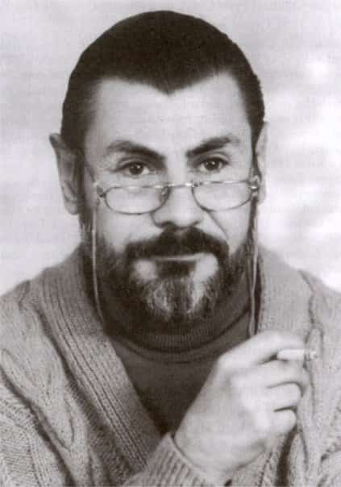

Metin Altıok
14 Mart 1941’de İzmir, Bergama’da doğdu. Çocukluğunu ve ilkgençliğini geçirdiği Karşıyaka’da ilk, orta ve lise öğrenimini tamamladı. 1971’de Ankara Üniversitesi Dil ve Tarih Coğrafya Fakültesi Felsefe Bölümü’nden mezun oldu. 1967’de Ankara Fransız Kültür Merkezi’nde ilk resim sergisini açtı (Çetin Sipahi ile birlikte). Daha sonraki yıllarda yine Fransız Kültür Merkezi’nde, Ankara Sinematek Derneği’nde (Orhan Taylan’la birlikte), Ankara Devlet Güzel Sanatlar Galerisi’nde resimlerini sergiledi. Lise yıllarında başlayan şiir serüvenini ilk defa Gezgin adlı kitabıyla (1976) günyüzüne çıkardı. 1979’a kadar Ortadoğu Amme İdaresi Enstitüsü’nde çalıştı. 1979 yılında Bingöl Lisesi felsefe öğretmenliğine atandı. 1987-1990 arası aynı görevi Karaman Lisesi’nde sürdürdü. 1990 yılı başında emekliye ayrılarak Ankara’ya yerleşti, iki kez evlendi. İlk evliliğinden bir kızı oldu.
Pir Sultan Abdal Kültür Şenliği için gittiği Sivas’ta, 2 Temmuz 1993 günü şeriatçıların saldırısına uğrayan Madımak Oteli’ndeki yangından ağır yaralı olarak kurtulduysa da 9 Temmuz 1993 günü, yangında yaşamlarını yitiren 34 arkadaşının kaderini paylaştı.